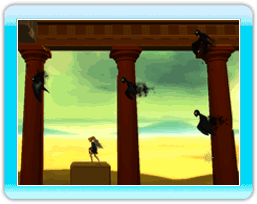
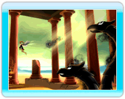
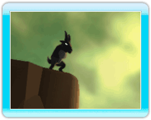
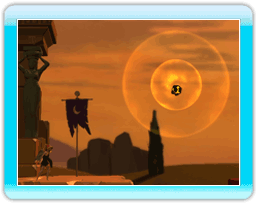
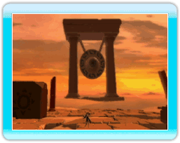

11 |
行く手を阻む者たち |
冒険の途中、様々なモンスターがニックスの行く手を阻みます。 |
 「ハーピー」 ハーピーは翼を持った空の王者です。ハーピーはテリトリーを守っており、群れで攻撃してくるので危険です。 |
 「ヒドラ」 ヒドラは恐れを知らない、いくつもの頭を持った怪物です。ヒドラは以前、沼地に住んでいましたが、今はどこも乾ききってしまったので砂地に適応してしまいました。砂漠をゆく生き物を襲います。 |
「サチェラス」 サチュラスは半人半羊の怪物です。以前、彼らはワインの神に仕えていました。しかし、地球変動の際に気がふれてしまい、彼らの目に入ったものすべてを攻撃します。 |
 「オーブ」 オーブは地球大変動の日より地球内部より吹き出す様になった熱せられた石です。ニックスはオーブに近づかない様にしてください。もし、オーブが付いてしまった場合にはWiiリモコンを左右に振って落としてください。 |
 「アルゴス」 アルゴスは地上の監視者です。彼の目に見つかると衝撃波に襲われます。物陰に隠れながら行動しましょう。 |
 |
 |
 |